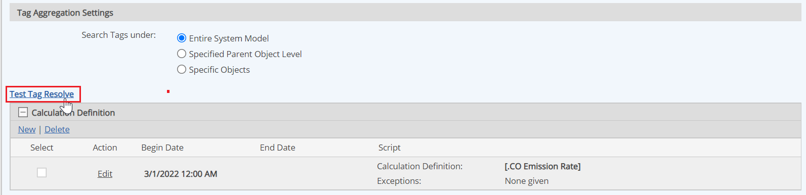
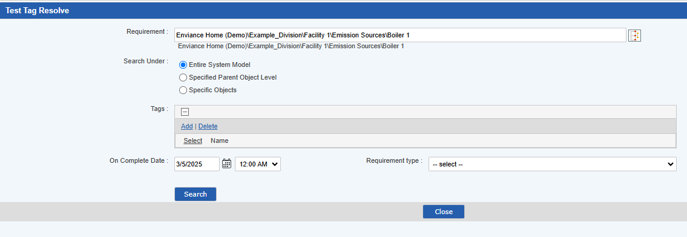

Use the Test Tag Resolve link to discover which requirements are resolved in Tag Aggregation Calculations. This test applies only to a Calculated requirement type.
You can access a Test Tag Resolve link from the following places:
New Calculated requirement page. Right-click POI and choose New > Requirement. From the New Requirement page, select Calculated as a type of requirement.
View Calculated Parameter Requirement Properties page or the Edit Calculated Requirement page. Right-click the existing requirement and choose Property > View or Edit.
To test a tag resolve:
From the Tag Aggregation section, click Test Tag Resolve.

The Test Tag Resolve window opens.
From the Test Tag Resolve window, select a requirement, a location you want to search and add tags.

On Complete Date: allows users to determine which requirements are resolved in a specific moment of time. If the date/time are not provided, the history of tags doesn’t matter.
To test which requirements, with assigned tags, are included in tag aggregation calculations, click Search.